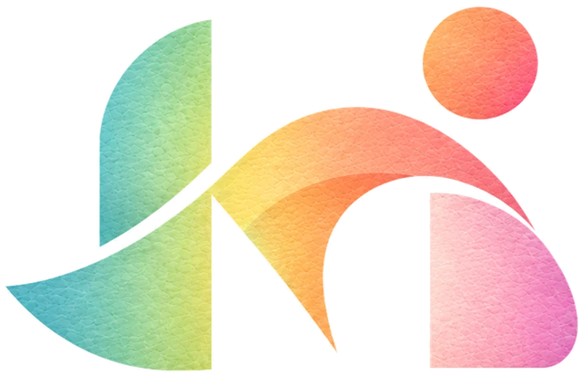

ART OF
CONNECTING
ちぎって、貼って、世代のあいだに色をつくる。
ひとつの作品から、人と人の距離をほどく。
そして、いつかどの町にも、手を動かす時間を。
私たちは信じている。
手を動かす時間には、人の心をほどく力があることを。
私たちは行動する。
和紙をちぎり、貼る「和アートセラピー」を、世代をこえた会話のきっかけにすることを。
私たちはつなぐ。
学生と高齢者、施設と地域。ふだん交わらない人たちのあいだに、小さな橋をかけることを。
私たちはこれから進める。
和アートセラピーを、施設の中だけでなく地域へ、研究や担い手の育成へと広げていくことを。【仮・今後の定義と計画は要確認】
私たちは上手さよりも、「その人らしさ」を大切にし、
正解をつくらず、できあがりの違いを一緒に面白がる。
がんばりすぎず、あきらめず、
続けることで、安心できる場所になるように努力する。
一枚の紙と半径5メートルの会話を、
同じ大切さで見つめ、
それぞれの暮らしに色が戻る未来を描き出す。
kuru.make には、町の時間を変える可能性がある。
だからこそ私たちは問い続ける。
その活動は、目の前のひとりに、やさしい驚きを届けているのかと。
NPO法人 kuru.make 代表理事 中村 将吾
PURPOSE
活動の意義と、期待される効果
高齢化が進み、孤独や健康が社会の課題となるなかで、慣れ親しんだ和の素材を使うアートセラピーは、薬を使わない心のケアの選択肢の一つになりうると考えています。
- 01気分がやわらぐ
制作の前後で「ゆううつ」と感じる人が減り、イライラの減少や活力の向上の傾向も見られました。
- 02思い出がよみがえる
和紙や着物にふれることで、昔の仕事や暮らしの記憶がよみがえり、語り合う時間が生まれます。
- 03交流と達成感
会話が増え、「やりきった」という達成感や、また参加したいという気持ちにつながります。
CONCEPT
手で、和紙をちぎる。はさみで切り、のりで貼りあわせる。
筆で描くのではなく、指先で形をつくる時間のなかで、
なつかしい記憶と、新しい会話が生まれていく。
世代をこえて、ひとつの作品を囲むこと。
それが、私たちの「和」アートセラピーです。
SYMBOL
シンボルマークについて

kuru.make の「k」と「m」を組み合わせたモノグラムです。高齢者と若者が折り紙を折る。ふたりが向かい合い、言葉を交わしながら重なりあう姿をかたちにしました。丸は、その間に生まれるあたたかな時間をあらわしています。
PARTNERS
協力施設・連携団体（仮置き。掲載の許可を得たものだけ載せます） 協力施設の詳細
- デイサービス
【仮・施設名】 - 特別養護老人ホーム
【仮・施設名】 - グループホーム
【仮・施設名】 - 順天堂大学
- 地域包括支援センター
【仮】 - 社会福祉協議会
【仮】 - 公民館
【仮】 - 協力企業
【仮】
MEMBERS
代表理事・理事・監事・顧問、協力施設、学生パートナーを紹介します。
MEMBERS を見る